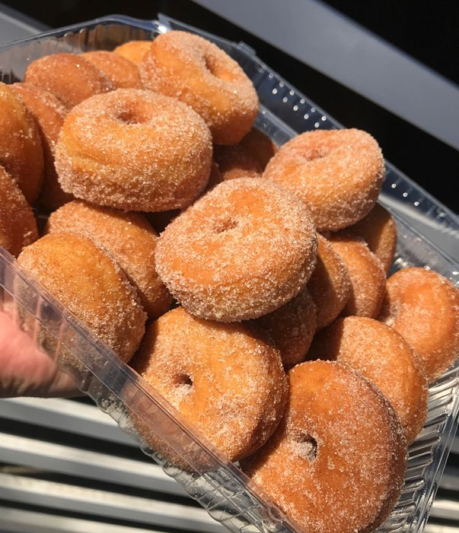

DARLING COFFEE


 \
\
"Querras nuestro café tanto como nosotros te queremos a ti"
En este sitio encontraras cafés de diferente tipo, tamaño y cantidad al igual que algunos postres que podrás disfrutar junto a tus cafés al igual que nuestros empleados lo atenderán en cuestión de minutos los trabajadores son educados, amables y serviciales, la cafetería en cuestión tiene una decoración moderna y muy cómoda para trabajar en tus proyectos al igual que se encuentra en un lugar alejado del ruido y la cuidad, es perfecta para llevar reuniones tranquilas.
"CAFÉS"
Frapuchino:caracterizado por la dulzura de su sabor, se ha vuelto un clásico de darling coffee.Es muy común que en darling coffe se espolvoree de polvo de cocoa, rallar el chocolate negro y hacer figuras de arte sobre la espuma para hacer más atractivo el café y que nuestros comensales disfruten de una presentación fabulosa. Un verdadero capuchino es una combinación de espresso, leche vaporizada y espuma de leche en partes iguales.

Frappe De Oreo: Una de las bebidas más ricas y clásicas de Darling Coffee sin duda es el Frappe de oreo y darling coffee te lo viene ofreciendo más delicioso que nunca y muy accesible. Frappe de oreo es la bebida más deliciona de nuestra cafetería, ya que es la base para una amplia variedad de bebidas de especialidad. Por esta razón, su presencia en darling coffe no puede faltar.En Darling Coffee disfrutarás de un frappe muy pero muy delicioso que sin duda alegrará tu mañana.

Café Frio americano: Este es un café muy rico y delicioso que ofrece darling coffee, el cual es una de las formas más clásicas de consumir el café, es solo para personas que gustan de sabores ligeramente fuertes o con una buena presencia de sabor. Es la bebida líder en ventas, pues tanto en USA como en México, el café americano es el método por excelencia para activar las mañanas de nuestros clientes, ya te lo podrás imaginar: es una de las bebidas más vendidas en DARLING COFFE. Tanto para empresarios como para estudiantes ya que les ayuda a activar su día de manera positiva y relajada.

Café Frio Con leche: El café con leche es el resultado de la unión de café y leche, es considerado el mejor café para el paladar de los clientes. El aroma que desprende y el sabor mezclado de estos dos elementos hacen del café con leche uno de los tipos de café más populares de darling coffe y el mundo. Si te gustan los sabores ligeros y dulces, esta bebida es totalmente para ti y sin duda creará una explosión de sabor en tu paladar que hará que te enamores de éste café, existen varias formas de prepararlo y acompañarlo, pero sin duda el más comprado en nuestra cafetería es es el que se prepara con crema y chocolate líquido.

Café Frio Con Crema Sabor vainilla: El café con vainilla es uno de los más populares igual En Darling coffe, además de ser un producto natural bajo en calorías, hay muchos beneficios para la salud al usar extracto de vainilla en su café, incluido que puede mejorar la salud de su cerebro, aumentar su rendimiento mental y mejorar su estado de ánimo. Algunas personas lo prefieren con un poco de crema por encima. Pero nosotros no juzgamos gustos y te lo podemos preparas según tus gustos y necesidades Algo que también está siendo muy famoso en darling coffe el arte en los cafés, el cual consiste en crear diferentes figuras a partir de la leche vaporizada esto hace que los empleados o baristas reciban mayor puesto y propinas. Sin duda este café será tu preferido al igual que es perfecto para acompañarlo con algún postre que igual te ofrecemos

Frappe de mango:En darling coffee Le ofrecemos un rico y delicioso Frappe de mango con el cual podras matar el calor y saborear la verdadera dulzura y más con este calor el cual se antojan bebidas frías o heladas en el día. En Darling Coffe tu elijes como quieres degustar tu frappe El dulzor, acidez y picante ya depende de cada quien ya que todos tienen gustos distintos, a unos les guste más picante y ácido que a otros, así que ve probando la combinación perfecta.

Frappe con nutella:Darlling coffe también cuenta con un frappe con nutella el cual hay de diferentes formas de preparación incluso le puedes pedir al encargado del lugar y con gusto te atenderá, El tamaño e ingredientes de tu Frappé de NUTELLA, los escoges tú, por ello, estamos seguros que llegará a tu casa u oficina a la temperatura adecuada y en su punto perfecto para degustarlo al realizar tus actividades diarias y todo esto a un buen precio.
"ACOMPAÑAMIENTOS"

Donitas:Darling coffe también les viene ofreciendo unas ricas donas las cuales podrás degustar en tus mañanas las cuales sin duda estos postres aran que sean perfectos debido a sus sabores y combinaciones dulces y/o saladas al igual que su forma de servirlo, Darling coffe ofrece este postre en distintas presentaciones al igual que existe una gran variedad de donas que puedes degustar en nuestras instalaciones y cada una de ellos tiene su característica forma de preparación que te dejaran impresionado qué esperas? ven y prueba este rico postre con ese sabor exquisito que solo en darling coffe encontraras.
 Pastel de Chocolates:Darling coffe no solo es reconocido por sus cafés si no al igual que sus postres peor sin duda ay un postre que
destaca entre toda la variedad de postres y este es el pastel, darling coffe ofre pasteles los cuales ay de diferentes sabores y colores que sin duda te van a encantar pero más te va encantar la excelente
presentación de este mismo el cual también puedes pedir que tenga alguna frase motivacional o un mensaje para esa persona especial que deseas impresionar y que mejor manera que al estilo de darling coffe.
Pastel de Chocolates:Darling coffe no solo es reconocido por sus cafés si no al igual que sus postres peor sin duda ay un postre que
destaca entre toda la variedad de postres y este es el pastel, darling coffe ofre pasteles los cuales ay de diferentes sabores y colores que sin duda te van a encantar pero más te va encantar la excelente
presentación de este mismo el cual también puedes pedir que tenga alguna frase motivacional o un mensaje para esa persona especial que deseas impresionar y que mejor manera que al estilo de darling coffe.
donitas(UN DOMO) |
pastel de chocolate |
|---|---|
$25.00 |
$35.00 |
Cafes y frappes |
Frapuchino |
Frappe De Oreo |
Café Frio americano |
Café Frio Con leche |
Café Frio Con Crema Sabor vainilla |
Frappe de mango |
Frappe con nutella |
|---|---|---|---|---|---|---|---|
vaso |
$40.00 |
$45.00 |
$20.00 |
$20.00 |
$25.00 |
$45.00 |
$45.00 |